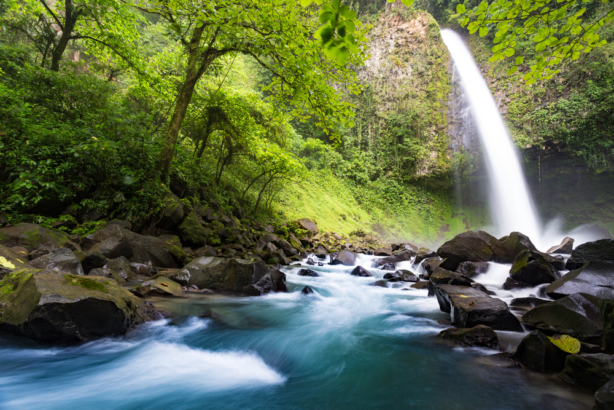
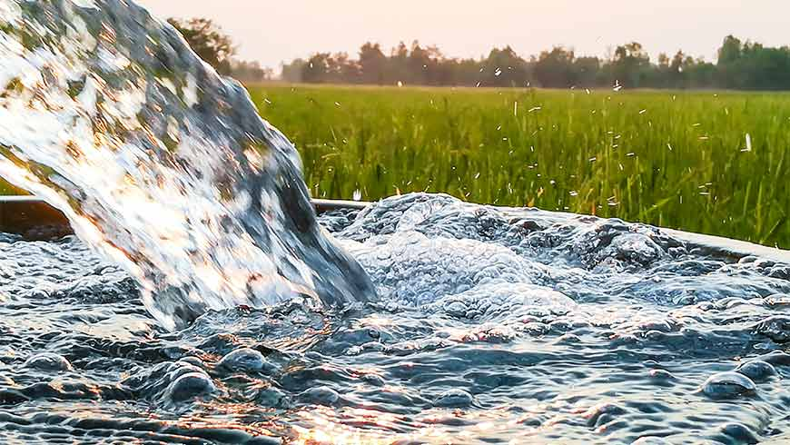

| Sustainable Earth: Water |
|---|
|  |
|
CLEAN WATER IS essential for life, but most people in the developed world don't think much about the water they use for drinking, food preparation, and sanitation. In developing nations, however, the search for safe drinking water can be a daily crisis. Millions of people die each year, most of them children, from largely preventable diseases caused by a lack of access to clean water and proper sanitation. |
|
Sandra Postel, director of the Global Water Policy Project and the National Geographic Society's freshwater fellow, said freshwater scarcity presents a growing problem to be addressed during the United Nations Conference on Sustainable Development (Rio+20) in Brazil from June 20 to 22. "It manifests itself in the depletion of groundwater, and the drying up of rivers and lakes upon which people depend for irrigation to grow their food," she said. "The intersection of water scarcity, food security, and a changing climate on top of it all raises a suite of water concerns that urgently need to be addressed." |
|
Much progress is possible. In fact, due to the dedicated efforts of governments and NGOs since the 1992 Earth Summit, safe drinking water has been made available to some 1.7 billion people around the world, with projects ranging from modern piped plumbing to rainwater collection and storage. |
|
But an estimated 880 million people still don't have regular access to clean water. "And we haven't made nearly as much progress on sanitation," Postel said. "Something like 2.7 billion people are without adequate sanitation, so that challenge still looms very large." Policymakers will struggle to lower both numbers even as the planet's population rises by an expected three billion over the next 50 to 75 years. |
|
About 5,000 children die each day due to preventable diarrheal diseases such as cholera and dysentery, which spread when people use contaminated water for drinking or cooking. A lack of water for personal hygiene leads to the spread of totally preventable ailments like trachoma, which has blinded some six million people. |
|  |
|
Water woes also trap many low-income families in a cycle of poverty and poor education—and the poorest suffer most from lack of access to water. People who spend much of their time in ill health, caring for sick children, or laboriously collecting water at distances averaging 3.75 miles (6 kilometers) a day are denied educational and economic opportunities to better their lives. |
|
Competition can be fierce for this precious commodity. Agriculture claims the lion's share of freshwater worldwide, soaking up some 70 percent, and industrial uses consume another 22 percent. Watersheds and aquifers don't respect political borders and nations don't always work together to share common resources—so water can be a frequent source of international conflict as well. |
|
Day-by-day demand keeps growing, further draining water sources, from great rivers to underground aquifers. "We're going deeper into debt on our groundwater use," Postel said, "and that has very significant impacts for global water security. The rate of groundwater depletion has doubled since 1960." |
|
Some of Earth's groundwater is fossil water, created when Earth's climate was far different. Today such water is as finite as petroleum. Other aquifers are renewable. "But we're pumping many of them out faster than precipitation is recharging them," Postel explained. "This is the case underneath the breadbasket of India, underneath the wheat and cornfields on the plains of north China, under California's Central Valley. We need to bring withdrawals into balance with recharge." |
|
Humanity's growing thirst also poses a major problem for aquatic ecosystems. "When we take water from rivers, floodplains, and watersheds, those ecosystems bear the brunt of water scarcity and begin to be degraded or disappear," she said. "And that also creates a cost to us, not just to nature, because we also depend upon those ecosystems." |

|
On the App Store Now |
Follow Us On |


|


|